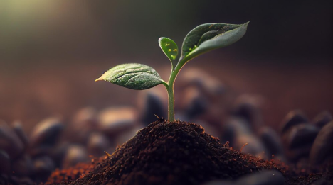

ROBÔS AGRÍCOLAAAAAAAAAS

Máquinas autônomas que colhem frutas e vegetais com precisão e cuidado.
________________________________________________
• Tipos de Robôs
• Tecnologias Utilizadas
• Benefícios
• Desafios na Implementação de Robôs na Agricultura
Saiba MaisCULTIVO AGRÍCOLA
Plantas cultivadas para fins de alimentação, produção de fibras, bioenergia, ou outros produtos comerciais.
________________________________________________
• Tipos de Plantas
• Técnicas de Cultivo
• Benefícios
• Desafios do Cultivo na Plantação
Saiba Mais